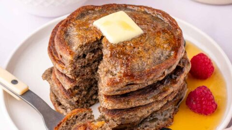

Sourdough Buckwheat Pancakes

Description
Buckwheat has been a staple crop in West Virginia for generations.
Early settlers in the Appalachian region relied on buckwheat for pancakes, biscuits, and porridge, appreciating its versatility and ability to thrive in the mountainous terrain.
Today, buckwheat continues to be a beloved ingredient in Appalachian cuisine, cherished for its unique flavor and cultural significance.
Sourdough buckwheat pancakes are a delicious twist on the classic breakfast favorite, offering a rich, nutty flavor with a tangy kick from the sourdough starter. These pancakes are hearty, fluffy, and full of wholesome goodness. Buckwheat flour adds a distinctive earthy taste and a beautiful speckled appearance to the pancakes, making them both visually appealing and flavorful
Ingredients
- 1 c. buckwheat flour
- 1/2 c. sourdough starter (unfed)
- 1/2 c. milk (or plant-based alternative)
- 1 egg
- 2 tbsp. maple syrup (or sweetener of choice)
- 1/2 ts. baking soda
- 1/2 ts. salt
- Butter or oil for cooking
Steps
- In a large mixing bowl, combine the buckwheat flour, sourdough starter, milk, egg, maple syrup, baking soda, and salt. Stir until well combined and a thick batter forms.
Let the batter rest for about 10-15 minutes to allow the sourdough to activate and the flavors to meld.
- Heat a non-stick skillet or griddle over medium heat and lightly grease it with butter or oil.
- Once the skillet is hot, pour about 1/4 cup of batter onto the skillet for each pancake. Use the back of a spoon to spread the batter into a round shape if needed.
- Cook until bubbles form on the surface of the pancake and the edges begin to look set, about 2-3 minutes.
- Carefully flip the pancakes with a spatula and cook for an additional 1-2 minutes on the other side, until golden brown and cooked through.
- Transfer the cooked pancakes to a plate and repeat the process with the remaining batter, greasing the skillet as needed.
- Serve the sourdough buckwheat pancakes warm, topped with your favorite toppings.
Suggestions for toppings:
Fresh berries and a drizzle of honey or maple syrup
Greek yogurt or whipped cream with a sprinkle of toasted nuts or seeds